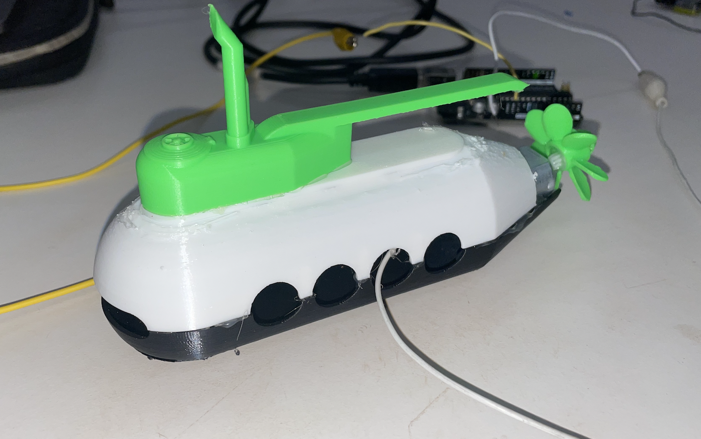

/week three: kinetic sculpture
# kinetic sculpture
# ---------------------------------
My sculpture wasn't much to call home about, but it was inspired. I 3D printed a submarine, then connected its propeller to a motor so it could spin.

The inspiration came from my brother being a Navy Nuclear Submarine Officer. I want reprint a more submarine without the motor and gift it to him for graduating his last phase of training!
One thing I would have added to this is an option to spin the motor slower, perhaps a potentiometer to control motor speed. Right now, it goes berserk when connected to power.